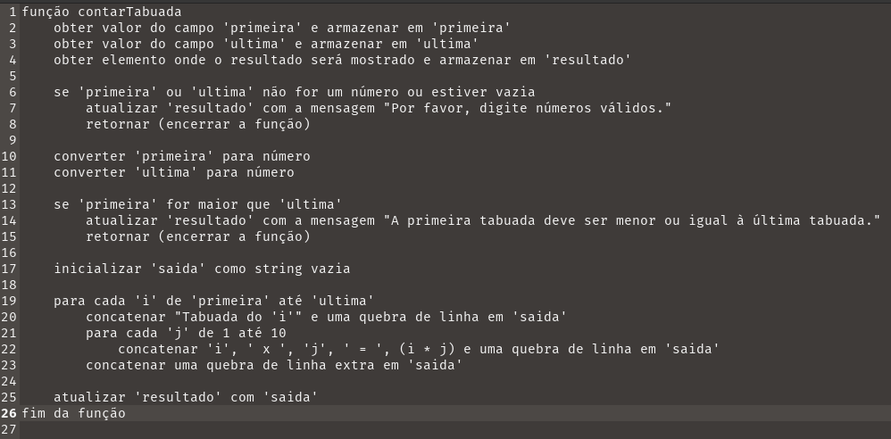

Para compreender melhor vamos ler o pseudocódigo

Explicando melhor temos !
Explicação Passo a Passo:
Função contarTabuada:
-
Obter valores: Obtemos os valores dos campos de entrada 'primeira' e 'ultima', e o elemento onde o resultado será mostrado.
-
Validar entrada: Verificamos se os valores são números válidos. Se não forem, mostramos uma mensagem de erro e encerramos a função.
-
Converter entrada: Convertamos os valores para números.
-
Verificar ordem: Garantimos que o valor da primeira tabuada seja menor ou igual ao valor da última tabuada. Se não for, mostramos uma mensagem de erro e encerramos a função.
-
Inicializar saída: Inicializamos a variável que armazenará a tabuada como uma string vazia.
Loops aninhados para gerar tabuada:
- Primeiro loop: Itera de 'primeira' até 'ultima'.
- Segundo loop: Gera a tabuada de 1 a 10 para cada valor de 'i'.
- Atualizar resultado: Atualizamos o conteúdo do elemento 'resultado' com a tabuada gerada.